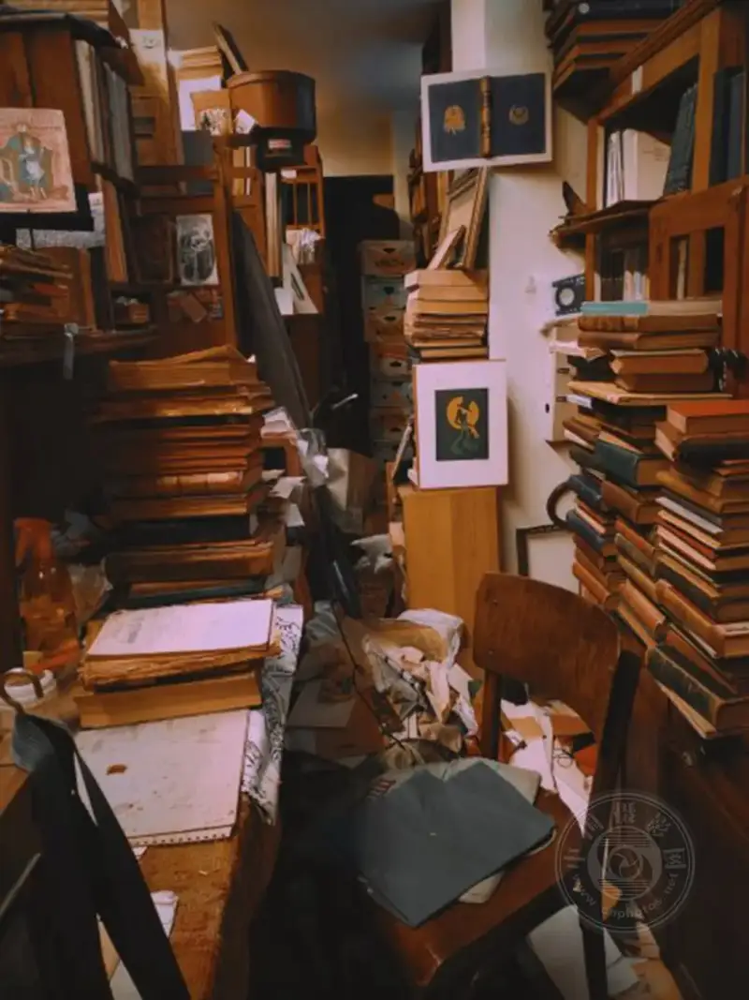
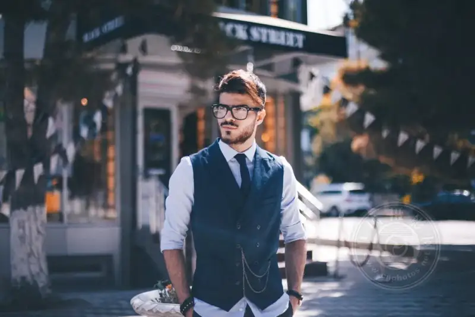
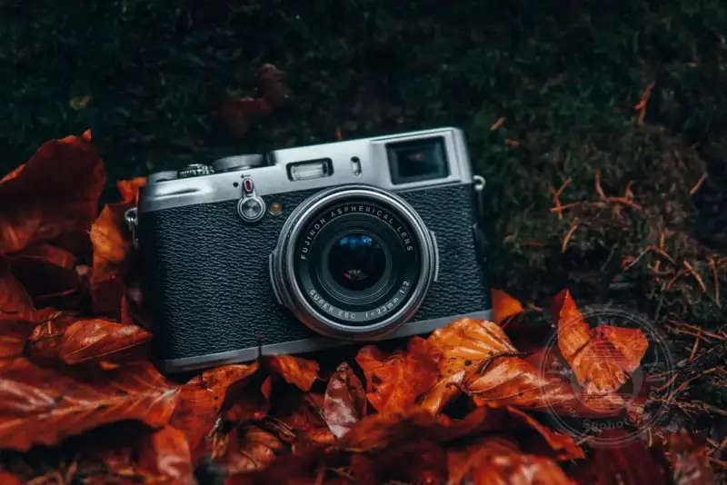
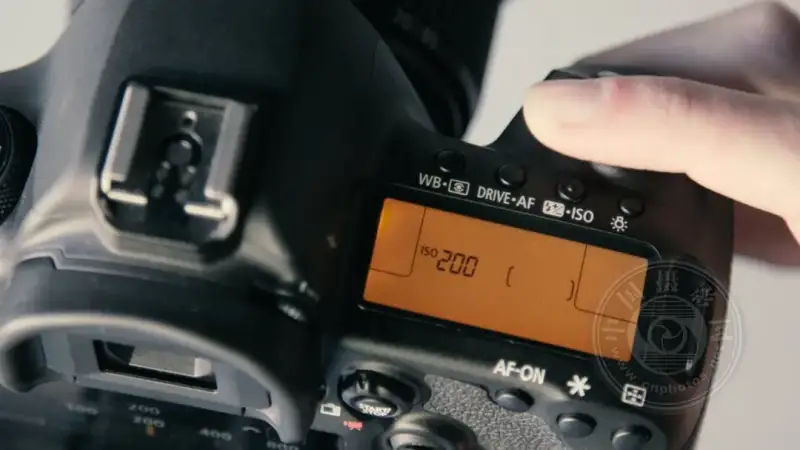

Published: 2023-03-20
Original link: https://www.cnphotos.net/academy/show-122.html
Every photographer makes mistakes, no matter their level of experience. But when you are just starting out, it is easy to repeat certain beginner mistakes. These mistakes are very easy to avoid once you know what they are and how to fix them.
In this article, I share the 10 photography mistakes beginners make most often. They cover gear, settings, and composition. If you are ready to drop these annoying mistakes for good and start taking consistently great images, let us begin.
1. Centering everything
When you first learn photography, it is tempting to put everything in the center of the frame. People, trees, buildings, even the horizon all go in the middle.
Putting the main subject in the center can look good at times. But most of the time it does not work. Why? A centered subject cuts the image in half. It confuses people, who are not sure which half of the frame to look at. Also, a centered image can look static and boring.
So instead of placing the subject in the center of the frame, try the rule of thirds. Put the main subject at one third of the frame. This gives you a balanced image, and it feels more dynamic and engaging.
The rule of thirds is not foolproof, but it works for most subjects in most situations.
2. Including distractions in the frame
It is easy to focus on a striking subject in a scene, such as a grand skyline, a beautiful building, or a vivid flower. But no matter how amazing your subject is, pay close attention to the other objects in the frame.

Beginners often include extra elements by accident. These pull the eye away from the main subject, such as bushes, streetlights, or passersby. Do not focus so hard on your subject that you forget to look around. Instead, take a quick look at the whole frame before you press the shutter. If anything distracts, adjust your angle or position until it is gone.
3. Cutting things off at the edge of the frame
It is easy to cut off a key element, such as a person feet, without noticing. These small things usually go unnoticed until someone points them out. But once you see them, you cannot unsee them.

Cutting off key parts of the frame is very common for new shooters. It may not be the feet. It may be a hand or the top of a head. It also happens in architecture and landscape photography, such as cutting off the tip of a spire, or lopping the top off a tree.
To fix this common mistake, learn to spot your subjects and make sure they sit fully inside the frame. If you cannot fit the whole subject, you must decide what to keep and what to crop. You may crop part of the subject, but do it with care.
4. Believing it is all about the camera
"I bought a great camera and spent a lot on it, but my photos do not look good." This is a common line from beginners. They often think a good camera automatically gives amazing photos. It does not.
A great camera does not fix weak technique, poor composition, or a lack of understanding of light. In photography, the person behind the lens decides most of the result. The camera is only a tool to bring their creative vision to life.
So do not rely on your gear alone. Do not feel let down if your gear cannot take the photos you imagine. Great images take effort. If you want amazing results, you have to put in real work. (Reading this article is a good start.)

5. Shooting a subject from only one common angle
Every subject has a traditional view. People, landmarks, and buildings are usually shot from the front. The Grand Canyon is usually shot from the same angle, and so on.
There is nothing wrong with a standard shot of a subject. But if you only shoot clichés, you will never get anything original. So instead of shooting the same angle, spend time studying it from all sides. Walk around it, find a new vantage point, shoot from above, or move in close.
As you shoot more, you learn which angles work and which do not. In the end you get shots that are truly unique and truly yours.
6. Shooting in auto mode
Auto mode lets the camera handle everything for you, including focus and exposure. This can help when you first start, especially if you only want nice photos of family to hang on the wall or share on social media.
But as you gain experience, it is important to learn to set the controls by hand. For example, aperture priority lets you set ISO and aperture, while the camera finishes the exposure by choosing the shutter speed. This is a great mode if you want to understand your camera settings. I recommend it strongly to beginners who want to improve.
Why is control of the settings important? The camera usually does a decent job, but it cannot read your mind. It does not know the exact look you want. When you set the controls by hand, you make sure each image matches the picture in your head.
7. Forgetting to reset the controls
Many photographers make this mistake, not just beginners. Even pros slip up on it now and then.

It is normal to head out and adjust your settings as you change subjects and lighting. But the next time you shoot, you may forget those changes. The ISO may be too high, or the aperture too wide. Whatever it is, when you review your shots, none of them look right because the settings are wrong.
A few years ago I shot a four-day event. I could not work out why some photos were overexposed and others were very dark. It took me nearly three days to realize the camera was set to auto exposure bracketing (AEB), and I had forgotten.
My advice is to return your settings to default at the end of every shoot. If you raised the ISO, drop it back to the base value. If you opened the aperture, set it to f/8. If you slowed the shutter for a long exposure, set it back to around 1/250 s.
Then, when you start a new shoot, take a moment to check the camera. Check the mode, aperture, ISO, shutter speed, and focus mode. This way, an unexpected setting will not ruin your photos.
8. Not switching the frame orientation
One thing I often notice about new shooters is that they hold the camera only in landscape orientation. In other words, they never think to turn the camera sideways for a portrait shot.
This is not a big deal. After all, you can take many great horizontal photos. But it can be a bit limiting. Variety is the spice of life, and a few vertical shots add variety to your portfolio.
Also, some subjects actually benefit from a vertical frame. So next time, test both vertical and horizontal before you shoot. (If you are not sure which is best, try both and see how they look.)
9. Not asking for help
Taking great photos is hard. Even if you worry your shots look bad or silly, do not be afraid to ask for help. Email a photographer you admire and ask for feedback. Join an online group and talk to photographers with similar interests. Go to in-person photo events and ask for advice.
Most photographers are happy to help people who want to learn. Of course, do not pester them with too many questions. But a few questions are fine.
10. Panicking
This may sound dramatic, but if you hit a problem while shooting, such as images all over or underexposed, focus that will not lock, or a black LCD screen, do not panic. There is almost certainly a reasonable explanation. If you take the right troubleshooting steps, you can usually fix it right away.
A friend told a story about shooting in a cathedral, and all the photos came out black. She started to panic, not knowing why. Once she calmed down, she realized the ISO was too low.
Whenever you feel stuck, take a breath and calmly check the camera. Make sure it is in the right mode, with good exposure and focus settings. Take the time to think it through, and you will find the answer.
Final words
If you are a new shooter just learning your camera, or even an experienced enthusiast, you may make some of the mistakes I listed above.
Find the problem, then take steps to fix it. Your photos will look better as a result.
Which mistakes have you made? Or are there other beginner mistakes we missed? Share some of your thoughts with me.